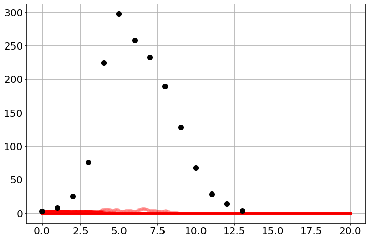
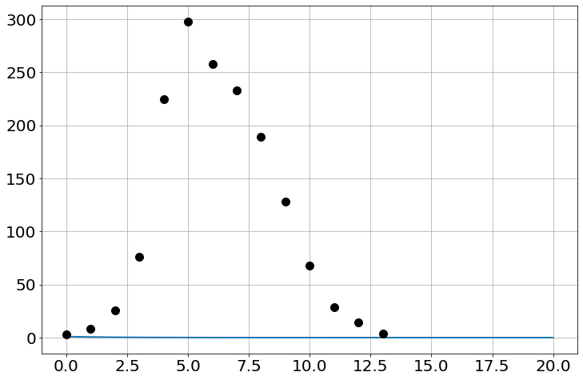
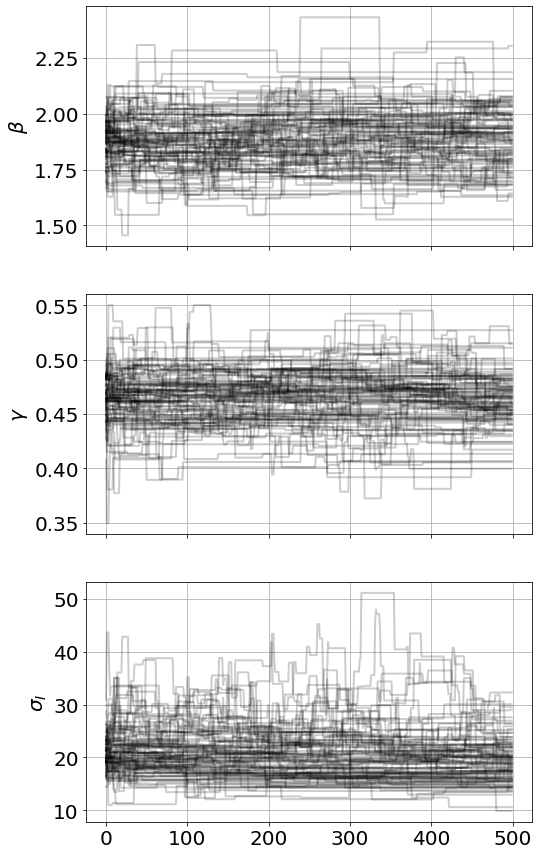
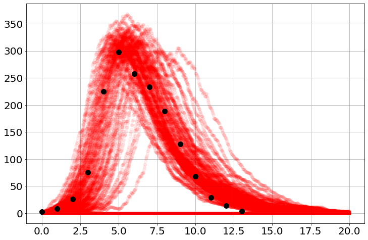

Populating the interactive namespace from numpy and matplotlibPopulating the interactive namespace from numpy and matplotlibβ=1.9732213241997467
γ=0.47521873806558335
β=.5
γ=1
So=763
Io=1
stoch_sim=Stochastic_Simulation()
stoch_sim.add("-S+I",'β*S*I/N',S=So,I=Io)
stoch_sim.add("-I +R",'γ*I',R=0)
stoch_sim.add("N=S+I+R")
stoch_sim.params(β=β,γ=γ)
stoch_sim.add_data(t=flut,I=flui)
stoch_sim.run(20,Nsims=100)100%|██████████████████████████████████████████████████████████| 100/100 [00:00<00:00, 22217.95it/s]this raises an error
β=1.9732213241997467
γ=0.47521873806558335
β=.5
γ=1
So=763
Io=1
stoch_sim_err=Stochastic_Simulation()
stoch_sim_err.add("-S+I",'β*S*I/N',S=So,I=Io)
stoch_sim_err.add("-I +R",'γ*I',R=0)
stoch_sim_err.add("N=S+I+R")
stoch_sim_err.params(β=β)
stoch_sim_err.add_data(t=flut,I=flui)
stoch_sim_err.run(20,Nsims=100)NameError: name 'γ' is not definedarray([[1, 1, 1, ..., 0, 0, 0],
[1, 1, 1, ..., 0, 0, 0],
[1, 1, 1, ..., 0, 0, 0],
...,
[1, 1, 1, ..., 0, 0, 0],
[1, 1, 1, ..., 0, 0, 0],
[1, 1, 1, ..., 0, 0, 0]])for i in range(100):
plot(stoch_sim.t,stoch_sim.I[i],'ro',alpha=0.05)
plot(flut,flui,'ko',ms=10,lw=3,)
@numba.jit
def _propensity_function(population, args):
S,I,R = population
β,γ = args
N=S+I+R
val = np.array([
β*S*I/N,
γ*I,
])
return valdynamic_sim=sim=Simulation()
sim.add("N=S+I+R")
sim.add("S'=-β*S*I/N",So)
sim.add("I'=+β*S*I/N-γ*I",Io)
sim.add("R'=+γ*I",0)
sim.params(β=β,γ=γ)
sim.add_data(t=flut,I=flui)
sim.run(20)
plot(sim.t,sim.I)
plot(flut,flui,'ko',ms=10,lw=3,)
number_of_iterations=500
stoch_model.run_mcmc(number_of_iterations,repeat=3)
stoch_model.plot_chains()Sampling Prior...
Done.
0.34 s
Running MCMC 1/3...
Done.
33.00 s
Running MCMC 2/3...
Done.
46.03 s
Running MCMC 3/3...
Done.
44.88 s<Figure size 864x576 with 0 Axes>
100%|███████████████████████████████████████████████████████████| 100/100 [00:00<00:00, 1284.31it/s]for i in range(100):
plot(stoch_sim.t,stoch_sim.I[i],'ro',alpha=0.05)
plot(flut,flui,'ko',ms=10,lw=3,)
β=1.9732213241997467
γ=0.47521873806558335
β=.5
γ=1
So=763
Io=1
stoch_sim=Stochastic_Simulation()
stoch_sim.add("-S+I",'β*S*E/N',S=So,I=Io)
stoch_sim.add("-E+I",'ζ*S*I',E=0)
stoch_sim.add("-I +R",'γ*I',R=0)
stoch_sim.add("N=S+I+R")
stoch_sim.params(β=β,γ=γ,ζ=.1)
stoch_sim.add_data(t=flut,I=flui)
stoch_sim.run(20,Nsims=100) 0%| | 0/100 [00:00<?, ?it/s]Populating the interactive namespace from numpy and matplotlibSo=100
Vo=1
Eo=0
t_max=1.1*tbt.max()
β=0.5
γ=0.5
ζ=0.5
δ=0.5
stoch_sim=sim=Stochastic_Simulation()
sim.add("-S+E",'β*S*V/N',S=So,V=Vo)
sim.add("-E+V",'γ*S*V',E=Eo)
sim.add("-E+X",'ζ*S*V',X=1)
sim.add("-V+R",'δ*S*V',R=0)
sim.add("N=S+E+V+X")
sim.params(β=0.03,γ=0.00047,ζ=ζ,δ=δ)
sim.add_data(t=tbt,V=tbv)
sim.run(t_max,Nsims=100) 0%| | 0/100 [00:00<?, ?it/s]ValueError: